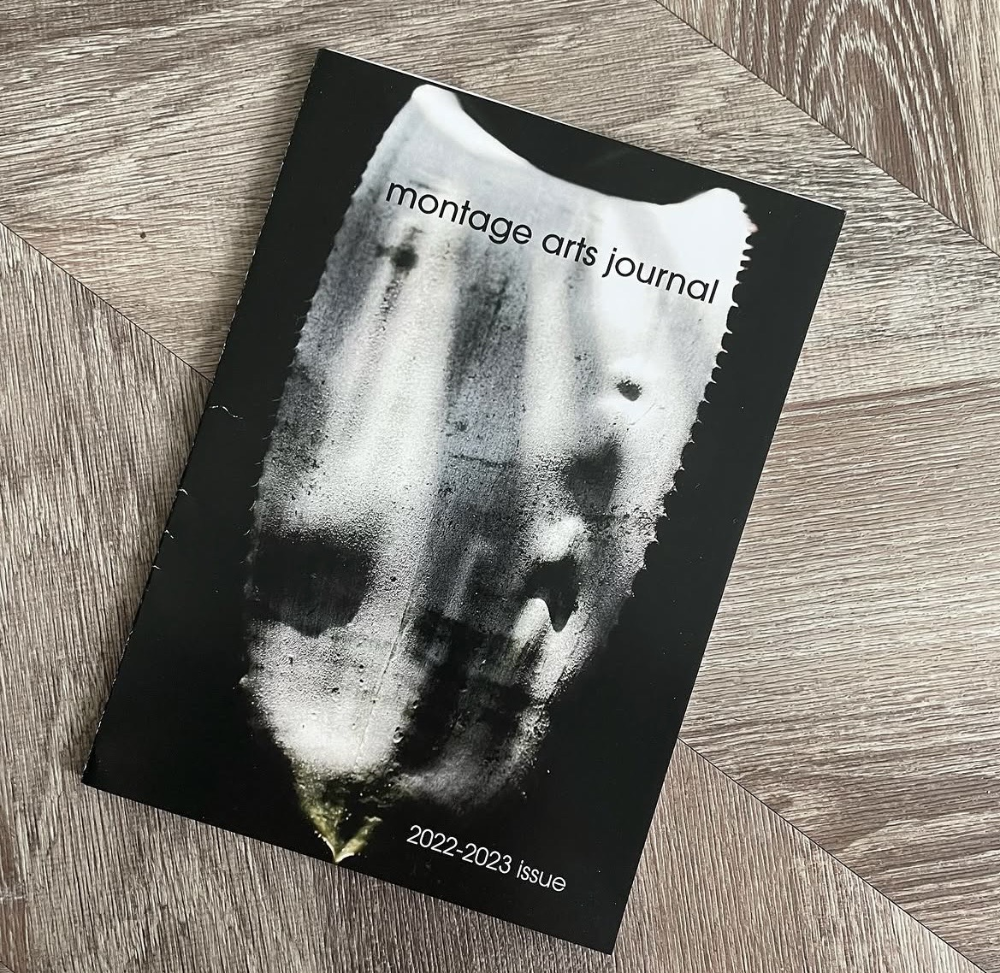
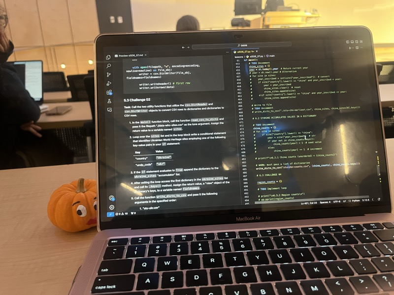
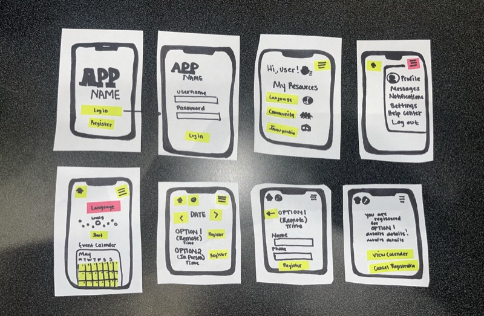
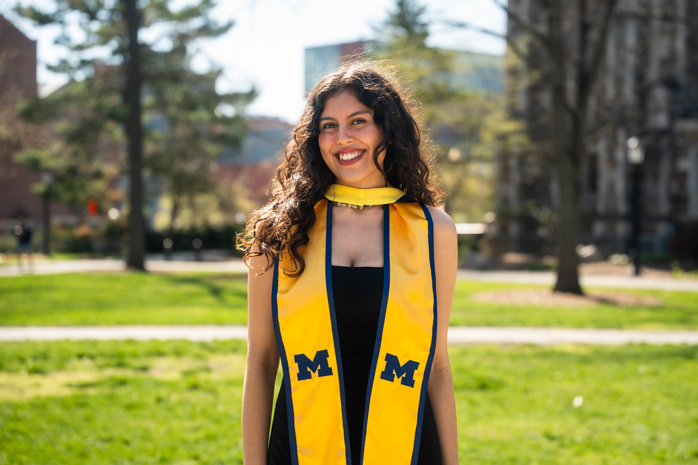

So many adventures!
I was the kid who filled notebooks with stories until my hand cramped. Always chasing the next story to disappear into.
⤳
montage arts journalI loved finding the right words for any audience, and that passion eventually led me to my first role as a content designer. There, I discovered that good content is about making people's lives easier.
⤳ the workiva team
the workiva team
 Company retreat
Company retreat
After graduation, I put that same adaptability and storytelling to work in a new way. Learning how persuasion lives in every word, not just the ones inside a product.
⤳ University of Illinois grad
University of Illinois grad

coding...
paper prototypes!I went back to school to bridge my gap between writing, technology, and the people in between.
⤳
University of Michigan grad2019 – 2022
Montage Arts Journal — Assistant Editor
Read and selected student submissions and helped design and lay out the journal each issue.
2021 – 2023
Ninth Letter — Junior Editor
Reviewed weekly submissions across fiction, poetry, and creative nonfiction for a nationally recognized literary magazine.
2022 – 2023
Workiva — Content Design Intern
Authored 20+ help articles and built a 300+ term taxonomy system across 4+ languages.
2023
University of Illinois — B.A. English & Creative Writing
Graduated while serving as Associate Editor at Ninth Letter, a nationally recognized literary magazine.
2024
VSolvit — Content Writer (Contract)
Wrote proposal and compliance narratives for Department of Defense and U.S. Navy technology contracts.
2025
Workiva — Content Design & Strategy Intern
Migrated and standardized content across 5+ product areas, reducing support inquiries by 15%.
2026
University of Michigan — M.S. in Information
Human-Computer Interaction, UMSI Achievement Fellow.